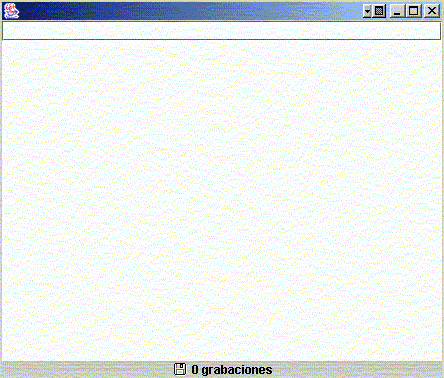
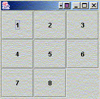

Ejercicios de conceptos avanzados de Swing
Bloc de notas
La clase BlocNotas tiene que ser un programa en Swing donde iremos escribiendo nosotros texto al estilo de un bloc de notas. El programa tendrá:
- En la parte superior, un cuadro de texto donde escribiremos el nombre del fichero donde guardar
- En la parte central, un área de texto (JTextArea) donde ir escribiendo el texto
-
En la parte inferior, una etiqueta con este icono.
La aplicación quedaría como:

-
Un temporizador (Timer) que cada 20 segundos guarde en el fichero indicado el contenido del área de texto. Lo que hará en su método actionPerformed(...) será guardar, si se ha indicado un nombre de fichero, el contenido del área en dicho fichero (lo abrirá y escribirá en él).
SUGERENCIA: se recomienda utilizar un objeto java.io.PrintWriter para escribir de golpe el contenido del cuadro de texto en el fichero:
public void actionPerformed(ActionEvent e) { if (txt.getText().length() > 0) { try { PrintWriter pw = new PrintWriter( new FileOutputStream(txt.getText())); pw.print(txtMain.getText()); pw.close(); ... // Resto del codigo (incrementar contador, etc) } catch(Exception ex) { System.out.println ("Error al escribir en fichero"); } } }donde txt sería el cuadro de texto superior con el nombre del fichero, y txtMain el área de texto central.
-
Una asociación de teclas de método abreviado, de forma que se guarde en fichero también cuando pulsemos la combinación CTRL + G.
SUGERENCIA: se recomienda crear un Action que sea llamado tanto por el Timer como por la combinación de teclas, de forma que no se repita el mismo código en uno y otro sitio. Lo único que haríamos al definir el timer y la combinación de teclas sería llamar al objeto Action que creemos:
MiAction ma = new MiAction(); Timer t = new Timer(10000, ma); txtMain.getInputMap(JComponent.WHEN_IN_FOCUSED_WINDOW).put( KeyStroke.getKeyStroke('G',InputEvent.CTRL_MASK), "grabar"); txtMain.getActionMap().put("grabar", ma);Y luego el Action tendría el método actionPerformed visto antes:
class MiAction extends AbstractAction { public MiAction() { } public void actionPerformed(ActionEvent e) { ... } } - La etiqueta de la parte inferior indicará cuántas veces se ha guardado el texto del JTextArea, bien mediante el Timer, bien mediante CTRL+G. Para ello se recomienda tener una variable contador que se vaya incrementando cada vez que se grabe, y mostrar en cada grabación el valor actualizado del contador en la etiqueta.
- (*) Hacer que el nombre del fichero donde guardar se elija abriendo un diálogo donde seleccionar el fichero. Para el diálogo, se tiene la clase JFileChooser. Consultarla en la API para ver cómo crearla, cómo abrir un dialogo para elegir un fichero a guardar (método showSaveDialog), cómo responder cuando se ha elegido el fichero (el código que devuelve dicho método), y cómo tomar el nombre del fichero seleccionado (método getSelectedFile).
-
(*) El área de texto se quedará corta cuando lleguemos al final, y entonces perderemos el texto que teníamos al principio. Para evitarlo, añadid barras de desplazamiento en el área de texto. Para añadirlas, se crea un objeto JScrollPane, y se le pasa como parámetro el área de texto. Finalmente, lo que se añade al JFrame es el JScrollPane, no el área de texto:
JScrollPane scroll = new JScrollPane(txtMain); ... add(scroll, ...);
- (*) Hacer que también se puedan abrir ficheros ya existentes para modificarlos. Podemos utilizar la misma clase JFileChooser citada anteriormente, con su método showOpenDialog para abrir ficheros en lugar de para guardar.
{kind=link}
Puzzle 3 x 3 (*)
Realizar una clase Puzzle que desarrolle un puzzle de 3 x 3 como el que se muestra en la figura:

El JFrame tiene un JPanel en el centro, y dicho JPanel tiene un GridLayout de 3 x 3, con 8 botones y una etiqueta vacía en última posición. Se trata de que cuando pulsemos uno de los botones que hay junto a la etiqueta, ésta y el botón intercambien su posición en la rejilla.
CONSIDERACIONES:
- Se deja libertad para elegir cómo almacenar los botones y definir los eventos.
-
Para volver a recolocar los botones en el panel cada vez que se cambien las casillas, se utiliza el método removeAll del JPanel (para borrar todos los elementos del panel) y luego irlos recolocando de nuevo. Al finalizar, llamamos al método updateUI del JPanel para que actualice los controles en pantalla:
panel.removeAll(); ... // Colocar los botones y etiqueta en el orden que se tenga panel.updateUI();
donde panel será el objeto JPanel en cuestión. Se recomienda encapsular este código en un método que se llamará siempre que se necesite refrescar el panel.